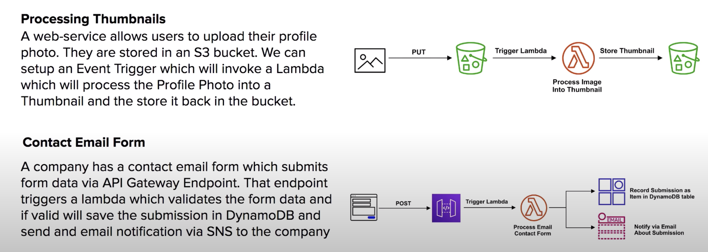
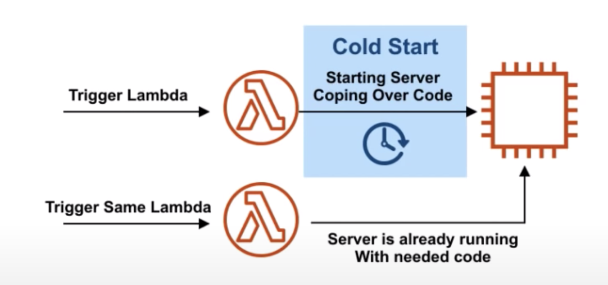

The current note and all other notes titled “AWS SAA Test prep” are based on the 10-hour free tutorial hosted by Andrew Brown and published by freeCodeCamp, which is accessible on YouTube through this link. Special thanks for the maker and publisher of the awesome video!
Run code without provisioning or managing servers. Servers automatically start/stop when needed. Serverless Functions. Pay per invocation.
Supports 7 runtime languages natively:
- Ruby
- Python
- Java
- C#
- Go
- Node.js
- Powershell
You can also Create your own custom runtime environments
If you need long running tasks (>15 mins) and a custom OS environment, consider using Fargate.
Typical user cases

Triggers
To invoke a lambda: use AWS SDK, or trigger from other AWS Services. e.g:
- API gateway
- AWS IoT
- Alexa Skills Kit
- Alexa Smart Home
- Application Load Balancer
- CloudFront
- CloudWatch Events
- CloudWatch Logs
- CodeCommit
- Cognito Sync Trigger
- DynamoDB
- Kinesis
- S3
- SNS
- SQS
Partner event sources (powered by Amazon EventBridge):
- Datadog
- OneLogin
- PageDuty
- Savlynt
- Segment
- SignalFx
- SugarCRM
- Whispir
- Zendesk
Pricing
You are charged based on the number of requests for your functions and the duration, the time it takes for your code to execute.
Lambda counts a request each time it starts executing in response to an event notification or invoke call, including test invokes from the console.
Duration is calculated from the time your code begins executing until it returns or otherwise terminates, rounded up to the nearest 100ms. The price depends on the amount of memory you allocate to your function. In the AWS Lambda resource model, you choose the amount of memory you want for your function, and are allocated proportional CPU power and other resources. An increase in memory size triggers an equivalent increase in CPU available to your function.
The AWS Lambda free usage tier includes 1M free requests per month and 400,000 GB-seconds of compute time per month.
Lambda Defaults and Limits
- 1000 running concurrently
/tmpdirectory can contain up to 500MB- Maximum timeout: 15min
- You can allocate any amount of memory to your function between 128MB and 3008MB, in 64MB increments.
VPC
By default running in No VPC.
To interact with some services you need to have your Lambda in the same VPC, e.g.RDS
You can set them to run in your own VPC, but your lambda will lose Internet access.
To access private Amazon VPC resources, such as a Relational Database Service (Amazon RDS) DB instance or Amazon Elastic Compute Cloud (Amazon EC2) instance, associate your Lambda function in an Amazon VPC with one or more private subnets.
To grant internet access to your function, its associated VPC must have a NAT gateway (or NAT instance) in a public subnet.
Cold Starts
Serverless functions Cold Starts can cause delays in the user experiences. If your web-application relies on being very responsive, you want to re-consider Serverless functions.

There are strategies around ColdStarts such as Pre Warming which keep servers continuously running.
Cloud Providers are always looking for ways to reduce cold starts.